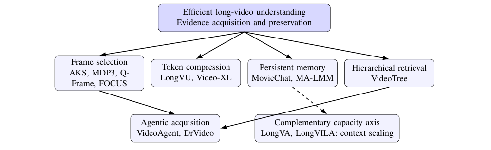
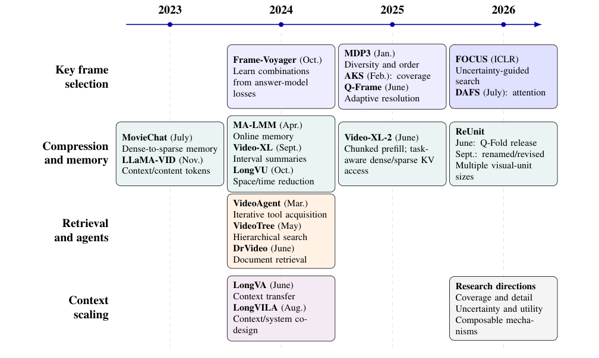
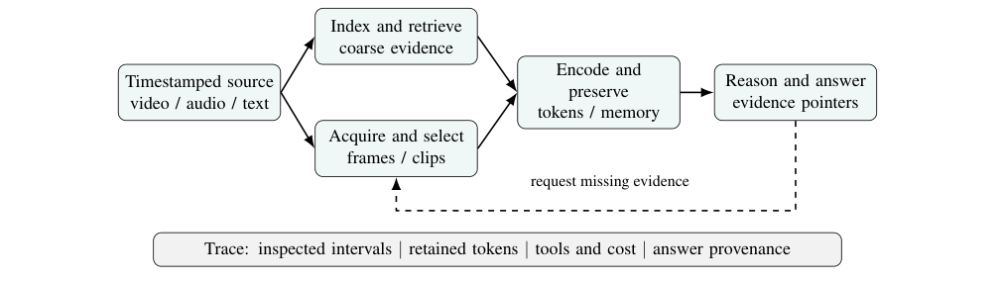

Efficient Long-Video Understanding and Key Frame Selection: A Survey of Compression, Memory, and Reasoning
Author-hosted preprint · 2026
Corresponding author: kanchansarkar9975@iitbombay.org
Abstract
Long-video understanding requires locating sparse evidence, preserving temporal relationships, and reasoning over inputs that exceed practical multimodal context budgets. Increasing the number of input frames addresses only part of this problem: useful evidence may still be missed, compressed away, or incorrectly connected. This survey organizes representative work around five interacting mechanisms: query-aware frame selection, visual-token compression, persistent memory, hierarchical retrieval, and agentic evidence acquisition, with long-context scaling as a complementary systems axis. We introduce a common analytical formulation that separates candidate acquisition, retained visual tokens, memory, and reasoning cost. We compare architectural choices, summarize benchmark capabilities, and present source-reported numerical examples with their evaluation conditions rather than constructing an uncontrolled leaderboard. Particular attention is given to the distinction between temporal coverage and evidence concentration, and between reducing answer-model tokens and reducing end-to-end computation. We conclude with a reproducible evaluation protocol and research directions in uncertaintyaware acquisition, motion-preserving selection, multimodal evidence alignment, and verifiable reasoning. This is a literature synthesis and methodological perspective; no new model, experimental measurements, or benchmark results are claimed.
Scope and organizing framework
This 21-page survey examines how long-video systems acquire and preserve evidence under finite computational budgets. It compares five complementary mechanisms and treats long-context scaling as a systems axis.
- Query-aware frame selection: locate informative moments before spending the downstream visual-token budget.
- Visual-token compression: reduce representation size while preserving the evidence needed by a question.
- Persistent memory: retain useful information across temporal segments.
- Hierarchical retrieval: organize a long video into searchable representations at multiple levels.
- Agentic evidence acquisition: iteratively request or revisit evidence to support reasoning.
The survey separates candidate acquisition, retained visual tokens, memory, and reasoning costs. Its reporting protocol distinguishes missed evidence, representation loss, and downstream reasoning errors.
Figures
Figure 1

Figure 2

Figure 3

Citation
Sarkar, K., Agrawal, D., & Jana, E. (2026). Efficient Long-Video Understanding and Key Frame Selection: A Survey of Compression, Memory, and Reasoning. Author-hosted preprint. https://kanchaniit.github.io/files/long-video-understanding-survey.html
@misc{sarkar2026longvideosurvey,
title={Efficient Long-Video Understanding and Key Frame Selection: A Survey of Compression, Memory, and Reasoning},
author={Sarkar, Kanchan and Agrawal, Darsh and Jana, Enakshi},
year={2026},
howpublished={Author-hosted preprint},
url={https://kanchaniit.github.io/files/long-video-understanding-survey.html}
}References
Numbering follows the uploaded PDF.
- Yukang Chen, Fuzhao Xue, Dacheng Li, Qinghao Hu, Ligeng Zhu, Xiuyu Li, Yunhao Fang, Haotian Tang, Shang Yang, Zhijian Liu, Ethan He, Hongxu Yin, Pavlo Molchanov, Jan Kautz, Jim Fan, Yuke Zhu, Yao Lu, and Song Han. LongVILA: Scaling long-context visual language models for long videos. In International Conference on Learning Representations, 2025. Read source ↗
- Tri Dao, Daniel Y. Fu, Stefano Ermon, Atri Rudra, and Christopher Ré. FlashAttention: Fast and memoryefficient exact attention with IO-awareness. arXiv preprint arXiv:2205.14135v2, 2022. Read source ↗
- Chaoyou Fu, Yuhan Dai, Yongdong Luo, Lei Li, Shuhuai Ren, Renrui Zhang, Zihan Wang, Chenyu Zhou, Yunhang Shen, Mengdan Zhang, Peixian Chen, Yanwei Li, Shaohui Lin, Sirui Zhao, Ke Li, Tong Xu, Xiawu Zheng, Enhong Chen, Caifeng Shan, Ran He, and Xing Sun. Video- MME: The first-ever comprehensive evaluation benchmark of multi-modal LLMs in video analysis. arXiv preprint arXiv:2405.21075v3, 2024. Read source ↗
- Bo He, Hengduo Li, Young Kyun Jang, Menglin Jia, Xuefei Cao, Ashish Shah, Abhinav Shrivastava, and Ser-Nam Lim. MA-LMM: Memory-augmented large multimodal model for long-term video understanding. In Proceedings of the IEEE/CVF Conference on Computer Vision and Pattern Recognition, 2024. Read source ↗
- Woosuk Kwon, Zhuohan Li, Siyuan Zhuang, Ying Sheng, Lianmin Zheng, Cody Hao Yu, Joseph E. Gonzalez, Hao Zhang, and Ion Stoica. Efficient memory management for large language model serving with PagedAttention. arXiv preprint arXiv:2309.06180, 2023. Read source ↗
- Yanwei Li, Chengyao Wang, and Jiaya Jia. LLaMA-VID: An image is worth 2 tokens in large language models. arXiv preprint arXiv:2311.17043, 2023. Read source ↗
- Hao Liu, Wilson Yan, Matei Zaharia, and Pieter Abbeel. World model on million-length video and language with blockwise RingAttention. arXiv preprint arXiv:2402.08268v4, 2025. Read source ↗
- Ziyu Ma, Chenhui Gou, Hengcan Shi, Bin Sun, Shutao Li, Hamid Rezatofighi, and Jianfei Cai. DrVideo: Document retrieval based long video understanding. arXiv preprint arXiv:2406.12846v2, 2024. Read source ↗
- Karttikeya Mangalam, Raiymbek Akshulakov, and Jitendra Malik. EgoSchema: A diagnostic benchmark for very long-form video language understanding. arXiv preprint arXiv:2308.09126, 2023. Read source ↗
- Minghao Qin, Xiangrui Liu, Zhengyang Liang, Yan Shu, Huaying Yuan, Juenjie Zhou, Shitao Xiao, Bo Zhao, and Zheng Liu. Video-XL-2: Towards very long-video understanding through task-aware KV sparsification. arXiv preprint arXiv:2506.19225, 2025. Read source ↗
- Alec Radford, Jong Wook Kim, Chris Hallacy, Aditya Ramesh, Gabriel Goh, Sandhini Agarwal, Girish Sastry, Amanda Askell, Pamela Mishkin, Jack Clark, Gretchen Krueger, and Ilya Sutskever. Learning transferable visual models from natural language supervision. arXiv preprint arXiv:2103.00020, 2021. Read source ↗
- Xiaoqian Shen, Yunyang Xiong, Changsheng Zhao, Lemeng Wu, Jun Chen, Chenchen Zhu, Zechun Liu, Fanyi Xiao, Balakrishnan Varadarajan, Florian Bordes, Zhuang Liu, Hu Xu, Hyunwoo J. Kim, Bilge Soran, Raghuraman Krishnamoorthi, Mohamed Elhoseiny, and Vikas Chandra. LongVU: Spatiotemporal adaptive compression for long video-language understanding. In Proceedings of the 42nd International Conference on Machine Learning, volume 267 of Proceedings of Machine Learning Research, pages 54582–54599, 2025. Read source ↗
- Yan Shu, Zheng Liu, Peitian Zhang, Minghao Qin, Junjie Zhou, Zhengyang Liang, Tiejun Huang, and Bo Zhao. Video- XL: Extra-long vision language model for hour-scale video understanding. arXiv preprint arXiv:2409.14485v4, 2024. Read source ↗
- Enxin Song, Wenhao Chai, Guanhong Wang, Yucheng Zhang, Haoyang Zhou, Feiyang Wu, Haozhe Chi, Xun Guo, Tian Ye, Yanting Zhang, Yan Lu, Jenq-Neng Hwang, and Gaoang Wang. MovieChat: From dense token to sparse memory for long video understanding. arXiv preprint arXiv:2307.16449v4, 2024. Read source ↗
- Hui Sun, Shiyin Lu, Huanyu Wang, Qing-Guo Chen, Zhao Xu, Weihua Luo, Kaifu Zhang, and Ming Li. MDP3: A training-free approach for list-wise frame selection in video- LLMs. arXiv preprint arXiv:2501.02885v2, 2025. Read source ↗
- Biao Tang, Xu Chen, Shuxiang Gou, Jingyi Yuan, Yuhan Zhang, Deyu Meng, and Chenqiang Gao. ReUnit: Multigranularity visual unitization for long video understanding. arXiv preprint arXiv:2606.12125v2, 2026. Read source ↗
- Xi Tang, Jihao Qiu, Lingxi Xie, Yunjie Tian, Jianbin Jiao, and Qixiang Ye. Adaptive keyframe sampling for long video understanding. arXiv preprint arXiv:2502.21271, 2025. Read source ↗
- Yolo Y. Tang, Jing Bi, Siting Xu, Luchuan Song, Susan Liang, Teng Wang, Daoan Zhang, Jie An, Jingyang Lin, Rongyi Zhu, Ali Vosoughi, Chao Huang, Zeliang Zhang, Pinxin Liu, Mingqian Feng, Feng Zheng, Jianguo Zhang, Ping Luo, Jiebo Luo, and Chenliang Xu. Video understanding with large language models: A survey. arXiv preprint arXiv:2312.17432v8, 2023. Read source ↗
- Weihan Wang, Zehai He, Wenyi Hong, Yean Cheng, Xiaohan Zhang, Ji Qi, Xiaotao Gu, Shiyu Huang, Bin Xu, Yuxiao Dong, Ming Ding, and Jie Tang. LVBench: An extreme long video understanding benchmark. In Proceedings of the IEEE/CVF International Conference on Computer Vision, 2025. Read source ↗
- Xiaohan Wang, Yuhui Zhang, Orr Zohar, and Serena Yeung-Levy. VideoAgent: Long-form video understanding with large language model as agent. arXiv preprint arXiv:2403.10517, 2024. Read source ↗
- Yilin Wang, Xiangxi Zheng, Dongxing Mao, Linjie Li, Zhengyuan Yang, Ping Yu, Rui Yan, Yuan Yao, and Alex Jinpeng Wang. Efficient frame selection for long videos at test time with attention-based MLLM selectors. arXiv preprint arXiv:2607.15689, 2026. Read source ↗
- Ziyang Wang, Shoubin Yu, Elias Stengel-Eskin, Jaehong Yoon, Feng Cheng, Gedas Bertasius, and Mohit Bansal. VideoTree: Adaptive tree-based video representation for LLM reasoning on long videos. arXiv preprint arXiv:2405.19209v3, 2024. Read source ↗
- Haoning Wu, Dongxu Li, Bei Chen, and Junnan Li. LongVideoBench: A benchmark for long-context interleaved video-language understanding. arXiv preprint arXiv:2407.15754, 2024. Read source ↗
- Sicheng Yu, Chengkai Jin, Huanyu Wang, Zhenghao Chen, Sheng Jin, Zhongrong Zuo, Xiaolei Xu, Zhenbang Sun, Bingni Zhang, Jiawei Wu, Hao Zhang, and Qianru Sun. Frame-Voyager: Learning to query frames for video large language models. arXiv preprint arXiv:2410.03226, 2024. Read source ↗
- Peiyuan Zhang, Kaichen Zhang, Bo Li, Guangtao Zeng, Jingkang Yang, Yuanhan Zhang, Ziyue Wang, Haoran Tan, Chunyuan Li, and Ziwei Liu. Long context transfer from language to vision. arXiv preprint arXiv:2406.16852v2, 2024. Read source ↗
- Shaojie Zhang, Jiahui Yang, Jianqin Yin, Zhenbo Luo, and Jian Luan. Q-Frame: Query-aware frame selection and multi-resolution adaptation for video-LLMs. arXiv preprint arXiv:2506.22139v3, 2025. Read source ↗
- Junjie Zhou, Yan Shu, Bo Zhao, Boya Wu, Zhengyang Liang, Shitao Xiao, Minghao Qin, Xi Yang, Yongping Xiong, Bo Zhang, Tiejun Huang, and Zheng Liu. MLVU: Benchmarking multi-task long video understanding. arXiv preprint arXiv:2406.04264v3, 2024. Read source ↗
- Zirui Zhu, Hailun Xu, Yang Luo, Yong Liu, Kanchan Sarkar, Zhenheng Yang, and Yang You. FOCUS: Efficient keyframe selection for long video understanding. In International Conference on Learning Representations, 2026. Read source ↗
- Heqing Zou, Tianze Luo, Guiyang Xie, Victor (Xiao Jie) Zhang, Fengmao Lv, Guangcong Wang, Junyang Chen, Zhuochen Wang, Hansheng Zhang, and Huaijian Zhang. From seconds to hours: Reviewing multimodal large language models on comprehensive long video understanding. arXiv preprint arXiv:2409.18938v2, 2024. Read source ↗